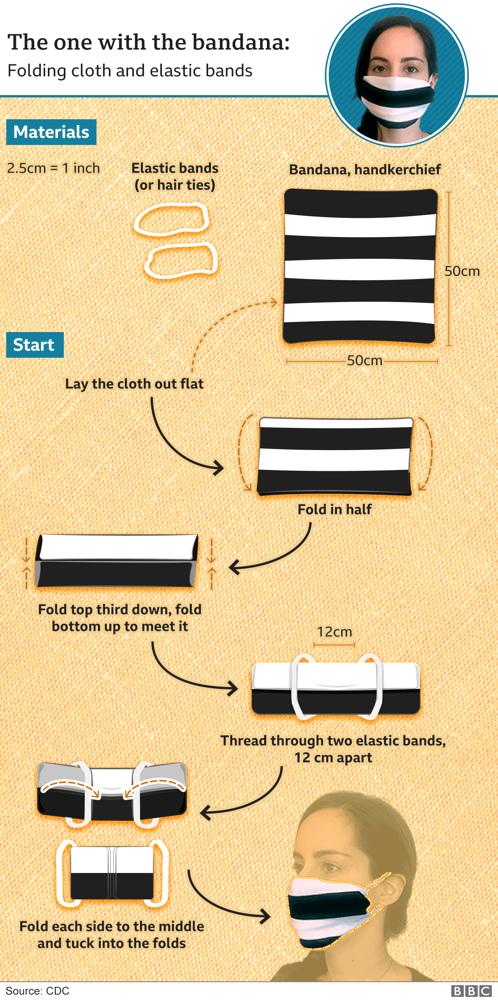

People across the country have to wear face coverings in certain circumstances when out of the house, to help limit the spread of coronavirus. It is compulsory to wear one on public transport and in shops, supermarkets and shopping centres.
While medical face masks and respirators are prioritised for health and care workers, you might want to try making your own face covering.
Here's our guide to different types and step-by-step instructions on how to make them.
Whether you're handy with a sewing machine, like cutting up old t-shirts or just want a quick fix, the principles are the same: the more layers of material the better, and the mask needs to fit snugly around the face, covering the nose and mouth, and you should be able to breathe comfortably.
One study has shown that the best materials to use are tightly woven cottons or twill, natural silk or quilted cotton material. But you can also make do with what you have around your home.
No seewing necessary
Let's start with a simple one.
The government advises washing your hands thoroughly or using hand sanitiser before putting on and after taking off face coverings.
How to wear your mask
- Make sure the mask covers your nose and mouth
- Avoid touching the mask, your eyes, nose, or mouth at all times
- Try not to keeping taking it off and putting it back on again, eg when going in and out of shops
- Store used face coverings in a plastic bag until you have an opportunity to wash them
- Wash a face covering regularly - it can go in with other laundry, using your normal detergent
- VIDEO: How to wear a face covering safely
- Foggy glasses, recycling, kids: Your guide to wearing a mask
Our next example uses an old t-shirt, preferably thick cotton or a cotton and polyester mix. And still nothing to sew.

Homemade masks are not necessarily intended to help the wearer, the government says, but they could help stop you inadvertently passing on the disease to others if you have it but are not showing symptoms.
If you do have coronavirus symptoms - such as a high temperature or continuous cough, you should stay indoors and isolate at home.
Whichever face covering you use, they are not a substitute for other guidance, such as social distancing and hand washing.Hand hygiene especially is just as important as before - so washing your hands with soap for at least 20 seconds when you get home.
- FACE MASKS: Should I be wearing one?
The sewing challenge
Our third example needs a few stitches, but they can be as simple or as complicated as you like - as long as it all holds in place and survives a few washes.

There are plenty of other ways to make a face covering - and many examples on social media from professional, designer logo'd masks to cut-up sports socks.
Have fun giving them a go. Remember you might need more than one, so you have something to use while the other is being washed. Face coverings should not be used for children under the age of two years or people who might not be able to fit them correctly.
When you have your mask, here are a few reminders of what not to do.